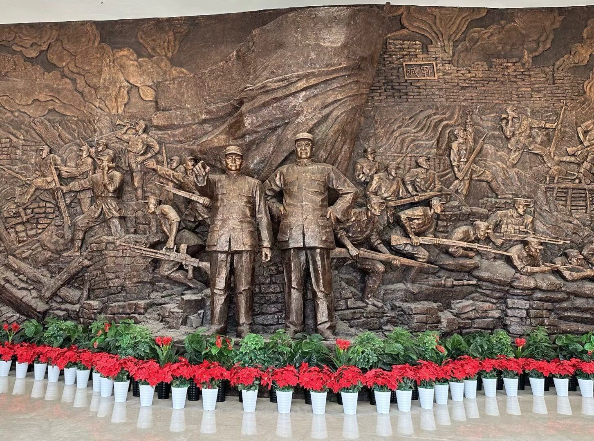
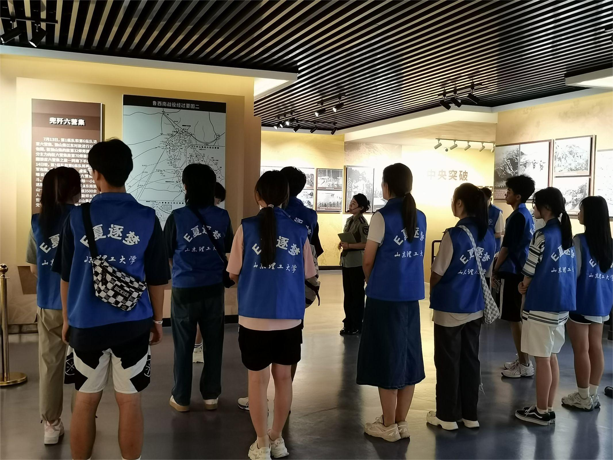
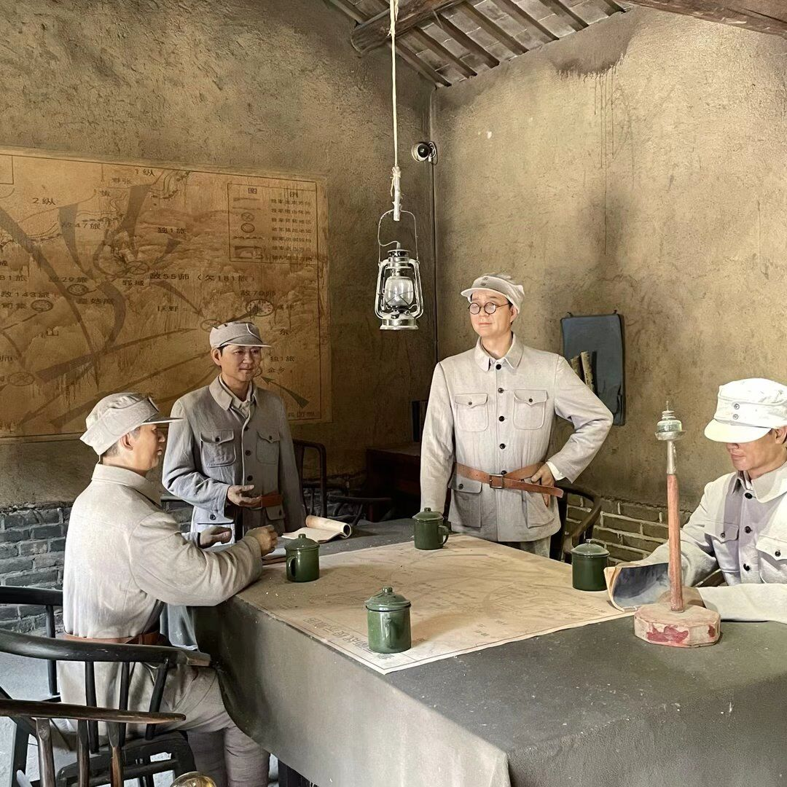

  
回顾革命峥嵘岁月，赓续红色使命力量——E夏逐梦实践团参观鲁西南战役指挥部旧址纪念馆
在祖国的心脏地带，坐落着一片充满历史底蕴的土地，这就是鲁西南战役指挥部旧址。这片土地见证了抗日战争和解放战争的重要历史时刻，是中国革命历程中不可或缺的一部分。2023年7月11日上午，在这个红色的土地上，E夏逐梦实践团踏上了寻找红色文化魅力的旅程，通过聆听讲解、参观展厅、故人故居等方式，深入了解了抗日战争和解放战争时期的历史背景，以及鲁西南战役指挥部在其中的重要作用。
鲁西南战役是解放战争时期刘伯承、邓小平遵照党中央由战略防御转入战略进攻的伟大决策，率领晋冀鲁豫野战军主力在山东西南部对国民党军队发起的一次重大战役，揭开了人民解放军由战略防御转入战略进攻的序幕。
纪念馆大厅四块钢板镂雕“强渡黄河”、“攻克郓城”、“人民支前”、“挺进大别山”也再现了这段烽火连绵的峥嵘岁月。
1946年6月至1947年6月，党中央高瞻远瞩，运筹帷幄，果断作出由战略防御转入战略进攻的伟大决策，从而解决各解放区因一年作战而被消耗党军队的有生力量所带来的影响和危害。兵马未动，粮草先行。刘伯承、邓小平指挥冀鲁豫区党委成立了黄河河防指挥部，并通过一系列战斗训练技术努力提高部队军事素质。蒋介石急忙调兵到达鲁西南战场，企图攻占郓城，然后迫使我军退出黄河以北，刘伯承、邓小平将计就计，攻其一点，首战郓城，经过八天的英勇奋战，取得了解放战争战略进攻中第一个重大军事胜利。1947年7月10日晚，我军向定陶守敌第153旅发起总攻，号称蒋介石“御林军”的国民党守敌第153旅全军覆没。各个击破，力斩长蛇。1947年7月13日，羊山集国民党守敌第66师完全陷于孤立。
随后，实践团参观了刘伯承、邓小平居室、会议讨论室等室内展示，体验军队生活环境，感受战争时的残酷和严峻，突出我军的智慧和种种伟绩。邓小平说表示，“冀鲁豫是个好战场，我军到哪里都有翻身群众支援，到哪里都有粮食吃。我军取得的胜利是和边区人民的支援分不开的。”人民就是江山，有了人民的支持，就有了战争的胜利，就有了红色的江山。
郓城，这座具有光荣历史传统的英雄之城，二十世纪以来饱经历史的沧桑和岁月的磨砺，幸有无数仁人志士投身其中，前赴后继，献出了青春、热血乃至生命，回忆历史、缅怀烈士，也经受了一次心灵的洗礼。了解完郓城的红色文明历史后，实践团成员们深刻认识到了红色文化的意义和价值，更加坚定了对革命精神和传统文化的信仰。同时，成员们也深刻认识到了自身的责任和使命，更加自觉地投身于社会实践和公益事业中。
鲁西南战役指挥部旧址纪念馆是一片充满红色记忆的土地，是中国革命历程中不可或缺的一部分。实践团成员们在这次参观中不仅深入了解了红色文化，他们在参观过程中还不断反思历史，并且认识到今天的幸福生活来之不易，是无数先烈用鲜血和生命换来的。同时也深刻领悟到，红色文化是中华民族的精神财富，是激励当代青年不断前进的重要动力。
正如习近平总书记所言，“回想过去那些峥嵘岁月，当代青年要向革命先烈表示崇高的敬意，要永远怀念他们、牢记他们、传承好他们的红色基因。”一起携手，传承红色基因，为实现中华民族的伟大复兴而不懈努力吧！